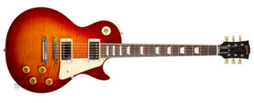
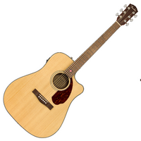
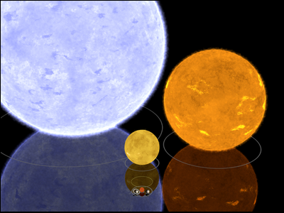

II. Le paradigme orienté objet¶
TP : Un combat de monstres¶
Dans ce TP, vous utiliserez un seul fichier Python que vous modifierez au fur et à mesure. Enregistrez-le au début du TP.
Dans l'univers de la série du Sorceleur de l'écrivain Andrzej Sapkowski, différents types de personnages s'affrontent. Certains ont des caractéristiques particulières comme les sorceleurs qui sont très habiles au combat et maîtrisent une certaine forme de magie. Il sont chargés d'éliminer les monstres présents sur le continent.
Pour représenter une situation de manière réaliste, le paradigme dit "objet" est le plus approprié. Il permet de modéliser des éléments du monde réel ou bien des concepts. Ce paradigme utilise des classes, une classe pouvant définir aussi bien un animal, qu'un véhicule, un humain, un steak, un schtroumpf... Les éléments de ces classes sont des objets, que nous allons utiliser pour représenter des sorceleurs et des monstres.
-
Implémenter le code suivant :
Tous les objets de la classeclass Personnage: # définition de la classe pass # pour l'instant, elle ne fait rien geralt = Personnage() # création d'un élément de la classe : un objet monstre = Personnage() # création d'un deuxième objetSorceleurauront les mêmes caractéristiques : des variables nommées attributs, et les mêmes comportements définis par des fonctions appelées méthodes. Parmi les caractéristiques des sorceleurs, on peut avoir leur nombre de points de vie. -
Implémenter le code suivant :
Taper dans la console :class Personnage: def __init__(self): # cette fonction est une méthode de la classe Sorceleur nommée "constructeur" : utilisée pour "construire" chaque nouvel objet self.vie = 50 # on attribue 50 points de vie par défaut à tout nouveau sorceleur geralt = Personnage() monstre = Personnage()geralt.vieetmonstre.vieet vérifier que la valeur attribuée à l'attribuevieest correcte. -
On peut vouloir définir au moment de la création de chaque objet une valeur initiale de points de vie différente pour chacun. Modifions le programme :
Vérifier que le nombre de points de vie de chacun est correct.class Personnage: def __init__(self, v): # la valeur est donnée en paramètre du constructeur self.vie = v geralt = Personnage() monstre = Personnage()
Note
Un constructeur peut avoir plusieurs arguments, mais il a toujours au moins l'argument self qui fait référence à l'objet lui-même. self est nécessaire pour accéder aux attributs et aux méthodes à l'intérieur de la classe. Il n'existe plus à l'extérieur.
-
Ajoutons quelques méthodes à notre classe pour mieux simuler le comportement des personnages :
Que vaut la variableclass Personnage: def __init__(self, v): self.vie = v def perd_vie(self): self.vie = self.vie - 1 def donne_etat(self): return self.vie geralt = Personnage(50) geralt.perd_vie() pts = geralt.donne_etat()pts? -
Modifier la méthode
perd_viepour que le nombre de points perdus soit défini aléatoirement à l'aide de la fonctionrandintde la bibliothèque durandom: elle retournera un entier entre 1 et 10 qui correspondra au nombre de points perdus.from random import randint # instruction pour importer la fonctionhelp(randint) "commande pour extraire la documentation de la fonction" -
Ajouter un attribut
expreprésentant l'expérience du personnage. Créer les méthodesgagne_expetdonne_exppermettant, respectivement, de faire gagner une valeured'expérience, et de consulter la valeur de l'attributexp. -
Créer un programme principal dans lequel
geraltaffrontemonstreselon les règles suivantes : - Chacun attaque l'autre à tour de rôle jusqu'à ce que le nombre de points de vie d'un des personnages descende à 0 (ou moins),
- Si l'expérience d'un personnage est supérieure à 40, alors son adversaire perd entre 5 et 10 points à chaque attaque. Sinon, il perd entre 0 et 5 points.
- Le vainqueur il gagne 2 points d'expérience. Il peut ensuite combattre un autre adversaire.
Attention !
Pour accéder aux valeurs des attributs, il faut utiliser les méthodes donne_etat et donne_exp.
Pour aller plus loin...
Vous pouvez étendre les possibilités du jeu, par exemple en organisant une sorte de tournoi avec plusieurs sorceleurs et plusieurs monstres. Il est aussi possible d'exploiter les différences entre monstres et sorceleurs en créant deux classes différentes, ayant des méthodes spécifiques traduisant les pouvoirs de chacun.
Cours¶
A. Syntaxe de la programmation orientée objet (POO)¶
- Dans le code ci-dessous, entourer la partie correspondant à la définition de la classe
Exempled'une couleur, et la partie correspondant à son utilisation d'une autre couleur.
class Exemple:
def __init__(self, param1, param2):
self.attribut1 = param1
self.attribut2 = param2
def methode(self, param):
#traitement sur le paramètre
def accesseur_att1(self):
return self.attribut1
def mutateur_att1(self, val):
self.attribut1 = val
e = Exemple() #création d'un objet
a1 = e.accesseur_att1()
e.mutateur_att1(5) #en supposant que attribut1 est de type int
Une classe regroupe un ensemble de propriétés (ses attributs) et de comportements (ses méthodes) communes à différents objets.
Qu'est-ce qu'un objet ?
Un objet est un élément, une instance d'une classe.
Qu'est-ce qu'un attribut ?
Un attribut d'un objet est une caractéristique, une propriété commune à tous les objets de la classe.
Qu'est-ce qu'une méthode ?
Une méthode est une fonction d'une classe, traduisant le comportement de ses objets. Elle ne peut s'appliquer que sur les objets de la classe. Le constructeur de la classe (__init__) est une méthode particulière, appelée à la création de chaque nouvel objet. Il initialise ses attributs. Les autres méthodes manipulent les attributs : elles peuvent chercher à y accéder (accesseurs ou "getters") ou à les modifier (mutateurs ou "setters").
B. Exemple¶
class Guitare:
def __init__(self, t, m):
self.type = t
self.marque = m
self.notes = [0,0,0,0,0,0] #représente les 6 cordes, et le fret sélectionné pour jouer un accord par un int
def joue(self,n):
self.notes = n
def ecoute_son(self):
return self.notes
gfolk = Guitare("folk", "Fender")
gelec = Guitare("électrique", "Gibson")
gelec.joue([0,3,2,0,1,0]) #accord de do
s = gelec.ecoute_son()
 
Exercices¶
Exercice 1 : (sur feuille, à tester sur ordinateur)¶
class Chat:
def __init__(self):
self.faim = 0
self.fatigue = 0
def bonjour(self):
print("Miaou !")
def joue(self):
self.faim = self.faim+1
self.fatigue = self.fatigue+1
class Chien:
def __init__(self):
self.faim = 0
self.fatigue = 0
def bonjour(self):
print("Ouaf !")
def joue(self):
self.faim = self.faim+1
self.fatigue = self.fatigue+1
-
Quel est l'intérêt ici d'avoir défini deux classes différentes pour les chiens et pour les chats ?
-
Créer un objet de la classe
Chat, un objet de la classeChien, et les faire se dire bonjour. -
La fonction
isinstance(objet, classe)de Python teste siobjetappartient àclasse. On veut modifier les deux méthodesbonjourpour leur donner en paramètre l'animal auquel est dit bonjour et faire que :- un chat dise bonjour à un autre chat, mais ignore un chien,
- un chien dise bonjour à un autre chien, et essaye de faire peur à un chat en aboyant plus fort : "OUAF !".
Tester les méthodes obtenues.
-
Proposer une autre implémentation utilisant une seule classe
Animal, sans perdre l'information que l'on peut avoir des chats ou bien des chiens. Reprendre la version initiale de se saluer des animaux. La tester en créant des instances de la classe. -
Ecrire une méthode
mangeet une méthodereposdans la classeAnimaldécrémentant respectivement l'attributfaimde 1, et l'attributfatiguede 2.
Exercice 2 : (sur feuille, à tester sur ordinateur)¶
from math import sqrt
class Astre:
'''Corps célestes, définis par leurs propriétés physiques.'''
def __init__(self, m, p):
self.masse = m
self.position = p
def distance(self, astre):
return ...
-
L'attribut
positionest une liste Python contenant deux éléments : sa coordonnée en x et sa coordonnée en y (on se situe dans le plan, pas en 3D).
Pour calculer la distance entre deux astres de position, respectivement, (x1, y1) et (x2, y2), on utilise la formule mathématique suivante : \(d = \sqrt{ (x_{1}-x_{2})^2 + (y_{1}-y_{2})^2 }\)
Compléter la définition de la méthodedistance. -
Un astre peut peser entre 0.07 et 300 fois la masse solaire, elle-même de \(2*10^{30}\). Créer deux objets de la classe
Astre, de masse minimale et maximale et respectivement de position [15,34] et [6,27]. -
Calculer la distance entre ces deux objets.
Exercice 3 : les attributs privés (sur ordinateur)¶
Les valeurs des attributs des objets Python sont par défaut modifiables après la création de l'objet. Il est possible d'interdire la modification des attributs en le déclarant avec deux tirets bas avant son nom : __x par exemple. Ils sont alors privés : on ne peut pas les manipuler en dehors de la définition de la classe. C'est une bonne pratique d'utiliser des attributs privés, et c'est ce qui rend les accesseurs et mutateurs nécessaires.
On rend privés les attributs de la classe Chat de l'exercice 1:
class Chat:
def __init__(self):
self.__faim = 0
self.__fatigue = 0
-
Créer un objet de la classe. Que se passe-t-il si on tente d'accéder à ses attributs ?
-
Créer les accesseurs et mutateurs nécessaire pour récupérer la valeur des deux attributs et pouvoir la modifier. Les tester sur un exemple d'objet.
Exercice 4 : les classes de Python (sur ordinateur)¶
Exercice plus difficile
Les types Python sont implémentés par des classes.
-
Afficher la valeur de l'attribut
__class__des expressions suivantes :(),[],{},int(0). -
En déduire comment utiliser la fonction
isinstancede l'exercice 3 pour tester si une valeur est un entier, une liste, un tuple, ou bien un dictionnaire. -
Utiliser cette fonction pour écrire une fonction
separequi prend en argument une liste Python et sépare les chaînes de caractères des entiers qu'elle contient (c'est une mauvaise pratique de mélanger les deux !).
Exemple :
entiers, caracteres = separe([1, "a", 666, "blablabla", "nsi"])
>>> entiers
[1,666]
>>> caracteres
["a", "blablabla", "nsi"]
Exercice 5 : paradigmes objet et impératif (sur feuille, à tester sur ordinateur)¶
Exercice plus difficile

Reprendre l'exemple de l'exercice 2. L'objectif est de traduire ce code utilisant le paradigme objet en un code purement impératif.
Pour cela :
- On utilise un dictionnaire pour stocker les valeurs des attributs d'un objet (c'est comme ça que fait Python en réalité !).
- On rédéfinit les méthodes comme de simples fonctions.
Utiliser les mêmes exemples que dans l'exercice 2.
Ce problème est un mélange entre ce que pourrait être une épreuve type bac écrite et pratique. Il a pour but de commencer à vous préparer aux deux épreuves.
Problème : Gestion d'adresses IP¶
On rappelle qu'une adresse IPv4 est une adresse de 4 octets, notée en décimale à point, en séparant chacun des octets par un point. On considère le réseau privé 192.168.1.0.
-
A quoi sert l'adresse IP attribuée à une machine ?
-
Ecrire cette adresse en binaire, en faisant apparaître tous les bits utilisés.
-
192.168.1.0 est une adresse réservée, la "première" du réseau. On considère qu'on ne peut pas modifier les trois premiers octets pour trouver une adresse à attribuer à une machine. On ne peut pas non plus utiliser la "dernière" adresse : celle correspondant au nombre le plus élevé écrit sur le dernier octet. Quelle est cette "dernière" adresse ?
-
En déduire le nombre d'adresses de ce réseau qui peuvent être attribuées à des machines.
-
Donner une adresse de ce réseau utilisable en écriture décimale, et en binaire.
Pour parcourir les adresses utilisables, on définit une classe AdresseIP :
class AdresseIP:
def __init__(self, adresse):
self.adresse = ...
def liste_octets(self):
""" Renvoie une liste Python de nombres entiers, la liste des octets de l'adresse IP """
return [int(i) for i in self.adresse.split(".")]
def est_reservee(self):
""" Renvoie True si l'adresse IP est une adresse réservée, False sinon """
return ... or ...
def adresse_suivante(self):
""" Renvoie un objet de AdresseIP avec l'adresse IP qui soit celle du self si elle existe, None sinon """
if ... < 254:
nouvel_octet = ...
return AdresseIP('192.168.1.' + ...)
else:
return None
-
Compléter la méthode
est_reservee, permettant d'exclure les adresses identifiées dans la question 2. -
Compléter la méthode
adresse_suivante, en utilisantliste_octets. -
Créer les objets de la classe ayant pour attribut :
192.168.1.1,192.168.1.0et192.168.1.254. -
Tester les méthodes
est_reserveeetadresse_suivantesur ces objets pour vérifier leur bon fonctionnement.